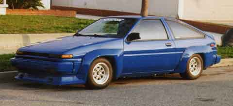

Camshaft
Duration Lift
256 8.35 HKS 2202-RT031
264 8.35 HKS 2202-RT032
272 8.35 HKS 2202-RT033
288 8.30 HKS 2202-RT034
304 8.30 HKS 2202-RT036
304 HI 10.35 HKS 2202-RT037
272 in 7.5 TRD
288 in 7.5 TRD
304 in 7.5 TRD
272 ex 7.5 TRD
300 ex 10.0 TRD
Cam Sprocket, Adjustable 2203-RT003
Piston Set
81.25mm Hi cast for stroker 2101-RT018
81.00mm 8.0:1 cast HKS 2101-RT024
81.25mm 11.4:1 cast HKS 2101-RT016
81.50mm TRD / Wiseco
83.00mm 10.2:1 TRD / Wiseco
83.00mm 12.7:1 TRD / Wiseco
Piston Ring
81.00mm HKS 2105-RT017
81.25mm HKS 2105-RT018
81.50mm HKS 2105-RT019
Cylinder Head Gasket
81.00 x 1.2 asbestos
82.00 x 0.7 metal HKS 2301-RT008
82.00 x 1.0 metal HKS 2301-RT009
82.00 x 2.0 metal HKS 2301-RT010
82.00 x 3.0 metal HKS 2301-RT011
Stroker Kit, 85-87 only 81.25 11.2:1 1711cc
Wire Set
TRD, Corolla AE92
NGK, MR-2 / FX16 TX-09
NGK, Corolla GTS TX-02
NGK, Platinum Spark Plugs
Intake Manifold
TWM, 85-89 with linkage 0112
with studs 8-0112
TWM, 90-91 with linkage 0106
with studs 8-0106
Carburetor
Weber 40
Weber 45
Linkage Kit
Air Filter, K & N
90 Corolla GTS 33-2030
87-89 MR-2 E-2605
85-86 MR-2 E-2485
86-87 FX-16 33-2533
85-86 MR-2 adapter + RC-3140
85-87 Corolla GTS adapter + RC-3140
85-87 Corolla GTS adapter + HKS Mini Power Flow
Headers
84-87 Corolla GTS, Toysport, Ceramic Coated
84-87 Corolla GTS, Toysport, Black
84-87 Corolla GTS, TRD
88-91 Corolla GTS, Toysport, Ceramic Coated
88-91 Corolla GTS, Toysport, Black
85-89 MR-2, TRD
Exhaust System
85-87 Corolla GTS Greddy S.S.Muffler 100130
85-87 Corolla GTS Greddy, Power Extreme 200110
85-87 Corolla GTS HKS LES-T05
88-91 Corolla GTS HKS LES-T14
85-89 MR-2 HKS LES-T03
Drivetrain
Centerforce I
90-91 Corolla GTS CF035542
88-89 Corolla GTS CF025523
85-87 Corolla GTS CF025523
7.85-89 MR-2 CF035542
12.84-6.85 MR-2 CF020523
Dual Friction
90-91 Corolla GTS DF542035
85-89 Corolla GTS DF523025
7.85-89 MR-2 DF542035
12.84-6.85 MR-2 DF523020
HKS Heavy Duty Clutch
85-87 Corolla 2604-ST002A
* If HKS clutch is installed, it fits all but supercharged models.
TRD Kevlar Clutch Sets
84-89 MR-2
85-87 Corolla GTS
Suspension
Tokico Gas Shocks
Tokico Illumina
Tokico Sport Springs
Toysport Sport Springs
Eibach Progressive Springs
Intrax Springs
Cusco Strut Tower Bar, Front
Greddy Strut Tower Bar, Front
TRD Strut Tower Bar, Front
Cusco Adj. Camber Plates
Limited-Slip Differential Corolla GTS Corolla GTS
Cusco
TRD
Kaaz
Brake Components
PBR/Repco Metal Masters Pads, Front
PBR/Repco Metal Masters Pads, Rear
Stainless Steel Braided Brake Lines set
SMC Carbon Kevlar Race pads
TRD Stainless Steel Braided Brake Hose
Cross-drilled Brake Rotors, pair
87-89, front or rear
85-86, front
85-86, rear
90-91, front
88-91, rear
Body Components
Toysport
Kaminari
TRD Wide Body Kit
Roll Bar
Race
Street
ARP Bolts
Head Stud Kit 203-4203
Main Stud Kit 203-5403
Rod Bolt Kit 203-6001
Main Bolt Kit 203-5001
Energy Suspension Bushings
Corolla GTS (84-87)
Front End Control Arm Bushing Set 8-3101
Strut Rod Bushing Set 8-7102
Sway Bar Frame Bushings, front 9-5110
Sway Bar Frame Bushings, rear 9-5106
Front End Links 9-8122
Tie-Rod Boots 9-13101
For any inquiries, please call 213-755-1177 or email us.